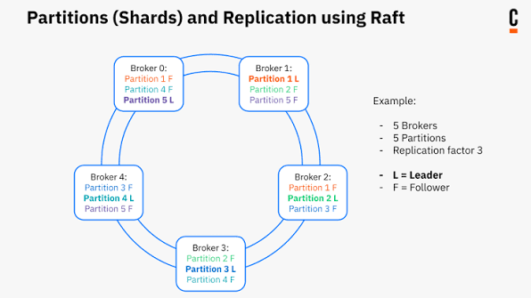

Mục tiêu: Đào sâu vào kiến trúc nội bộ của Zeebe — engine đứng sau Camunda 8 — để hiểu vì sao nó scale ngang được, chịu lỗi ra sao, và dữ liệu quy trình thật sự đi đâu khi một process instance chạy.
1. Điều gì làm nên sự khác biệt của Zeebe?
Bài Overview đã liệt kê Zeebe là một trong các thành phần cốt lõi của Camunda 8. Ở bài này, đào sâu riêng vào Zeebe — vì nó là phần quyết định khả năng scale và chịu lỗi của toàn hệ thống.
Khác với các workflow engine truyền thống dựa trên relational database, Zeebe dùng kiến trúc phân tán, dựa trên nhật ký (log-based). Nó không phụ thuộc vào một database tập trung để lưu trạng thái — dữ liệu được ghi trực tiếp vào local disk của từng broker, và việc xử lý được phân phối trên nhiều broker. Đổi lại, Zeebe đạt được thông lượng cao, độ trễ thấp ở quy mô lớn, và cơ chế sao chép (replication) giữa các broker đảm bảo dữ liệu không mất khi một node chết.
- Stateless Gateways — cổng kết nối client với cluster để deploy process và quản lý task, bản thân gateway không giữ trạng thái.
- Clustered Brokers — quản lý trạng thái, xử lý luồng dữ liệu, đảm bảo chịu lỗi và khả năng mở rộng.
- Exporters — đẩy các thay đổi trạng thái ra ngoài để theo dõi/phân tích, không chặn luồng xử lý chính.
- Clients — SDK hoặc API client, kết nối qua gateway để deploy process, tạo instance, xử lý task.
- Horizontal Scalability — scale bằng cách thêm broker, không phải scale-up một node duy nhất.
- Append-Only Audit Trail — mọi sự kiện liên quan tới process được ghi vào log chỉ-thêm (append-only), không sửa/xóa ngược.
💡 Zeebe dùng phân cụm (clustering) và phân vùng (partitioning) để đạt tính khả dụng cao và mở rộng ngang. Raft đảm bảo mỗi partition luôn có một leader sẵn sàng xử lý.
2. Các thành phần của Zeebe
| Thành phần | Vai trò |
|---|---|
| Gateway | Điểm vào duy nhất của cluster. Xử lý toàn bộ giao tiếp từ client, cân bằng tải request và định tuyến tới đúng partition/broker. Client không bao giờ kết nối trực tiếp tới broker — chỉ qua gateway. Gateway không lưu trạng thái nên scale ngang tự do, hỗ trợ cả gRPC và REST. |
| Broker | Node xử lý workflow thật sự. Mỗi broker phục vụ một hoặc nhiều partition, thực thi các bước trong process, dùng Raft consensus để bầu leader/follower và replicate log. Một broker có thể là leader của partition này và follower của partition khác cùng lúc. |
| Client | Ứng dụng khởi tạo và tương tác với process instance — implement business logic thật (service worker). Logic này nằm hoàn toàn bên ngoài Zeebe engine. |
| Exporter | Zeebe theo mô hình CQRS: ghi (command) đi qua broker, đọc (query) được tách riêng sang một storage khác. Exporter là cầu nối đẩy stream thay đổi trạng thái sang storage đó — mặc định là Elasticsearch, nhưng có thể tự viết exporter cho Redis, OpenSearch, hay RDBMS. |
Lưu ý quan trọng về CQRS: Operate, Optimize, Tasklist không query trực tiếp vào broker — chúng đọc dữ liệu đã export. Nghĩa là luôn có một độ trễ nhỏ giữa lúc process thật sự chạy và lúc UI hiển thị được trạng thái đó. Đây không phải bug, mà là đánh đổi có chủ đích để giữ broker tập trung vào việc xử lý (write path), không bị query path làm chậm.
3. Zeebe cluster — clustering & partitioning
Zeebe phân phối công việc trên nhiều broker để đạt chịu lỗi và mở rộng ngang, bằng hai cơ chế: tổ chức broker thành cluster, và chia dữ liệu thành partition.
Vì sao cần cả cluster lẫn partition
- Cluster — các broker hoạt động ngang hàng (peer), chia sẻ trách nhiệm: không có single point of failure, cân bằng tải và hiệu năng tốt hơn.
- Partition — dữ liệu được chia nhỏ, mỗi partition có một broker giữ vai trò leader; các broker khác giữ partition đó ở vai trò follower, replicate lại state của leader để đảm bảo dự phòng.
Ví dụ minh họa cách phân bổ với 5 broker, 5 partition, hệ số sao chép (replication factor) = 3 — mỗi partition có 1 leader (L) và 2 follower (F), rải đều để không broker nào ôm toàn bộ leader:

5 broker · 5 partition · replication factor 3 · L = Leader, F = Follower
Mỗi broker vừa là leader của một partition, vừa là follower của hai partition khác — không broker nào là điểm chịu lỗi duy nhất cho toàn cluster.
4. Raft — cơ chế đồng thuận đứng sau replication
Để đảm bảo chịu lỗi, Zeebe replicate dữ liệu giữa các broker bằng giao thức Raft (Reliable, Replicated, Redundant, and Fault-Tolerant) — xương sống cho clustering và high availability trong Zeebe.
Raft hoạt động thế nào
- Bầu leader — mỗi partition, trong mỗi nhiệm kỳ (term), chỉ bầu ra đúng một broker có log cập nhật nhất làm leader.
- Replicate log — lệnh được ghi vào log của leader trước, sau đó replicate sang các follower.
- Đảm bảo an toàn — một lệnh chỉ được commit khi đa số (majority) follower đã xác nhận. Kết quả: mỗi term chỉ có một leader, log bền (durable), và trạng thái nhất quán giữa các broker.
Luồng process instance đi qua các partition ra sao
- Deploy process — deploy trước tiên vào partition 1, sau đó phân phối tới tất cả partition khác, giữ cùng key/version ở mọi nơi để dễ nhận diện.
- Create instance — request tạo instance được route theo kiểu round-robin qua các partition để cân bằng tải.
- Running instance — sau khi khởi tạo, toàn bộ các bước tiếp theo của instance đó xử lý trên cùng một partition cho tới khi hoàn tất.
- Message event — khi client gửi message có correlation key, message được route thẳng tới partition tương ứng với key đó.
- Timer/start event — instance được kích hoạt bởi timer start event luôn được tạo trên partition 1.
Failover
Khi leader của một partition chết, một follower được promote lên làm leader mới ngay — xử lý tiếp tục mà không gián đoạn. Khi broker cũ hồi phục, nó tham gia lại cluster với vai trò follower, không tự động lấy lại vị trí leader.
5. Scale cluster & backpressure
Thêm broker và partition giúp Zeebe đạt khả năng mở rộng gần như tuyến tính. Bảng dưới là một lần benchmark thực tế với 3 broker / 3 partition, quan sát điểm CPU bắt đầu bão hòa và backpressure xuất hiện:
| Thời gian | Broker | Partition | Thông lượng | CPU | Backpressure |
|---|---|---|---|---|---|
| 09:30 | 3 | 3 | 150 PI/s | ~1.3 / 1.4 / 1.0 | 0 |
| 09:49 | 3 | 3 | 180 PI/s | ~1.3 / 1.5 / 1.1 | 0 |
| 10:00 | 3 | 3 | 210 PI/s | ~1.8 / 1.6 / 1.3 | 0 |
| 10:12 | 3 | 3 | 240 PI/s | ~1.8 / 2.0 / 1.6 | bắt đầu xuất hiện |
Từ ~240 process instance/giây trở lên với cấu hình 3 broker/3 partition, CPU bắt đầu bão hòa và Zeebe kích hoạt backpressure — cơ chế bảo vệ khi broker quá tải:
- Từ chối các request mới, ngoại trừ
CompleteJobvàFailJob— hai RPC này luôn được chấp nhận kể cả khi broker đang quá tải, để không làm kẹt các job đang chạy dở. - Các request bị từ chối trả về exception phía client — xử lý bằng retry strategy phù hợp (backoff), không phải lỗi cần panic.
Nói cách khác: khi thấy throughput chững lại và exception tăng ở phía client, việc đầu tiên cần kiểm tra không phải là code worker, mà là CPU của broker — rất có thể cluster đang cần thêm broker/partition chứ không phải bug.
6. Xử lý nội bộ — deterministic & log-based
Bên trong mỗi partition, Zeebe xử lý lệnh theo mô hình event sourcing: mọi thay đổi trạng thái là kết quả của việc áp dụng tuần tự các sự kiện trong log, theo đúng thứ tự đã ghi. Vì log là append-only và xử lý có tính xác định (deterministic) — cùng input, cùng thứ tự sự kiện luôn cho ra cùng trạng thái — nên khi một follower replay lại log của leader, nó tái tạo được đúng trạng thái đó, không cần đồng bộ theo cách nào khác.
Cụ thể một lệnh (ví dụ completeJob) đi qua broker theo 6 bước sau, từ lúc client gửi tới lúc nhận phản hồi:
- Sự kiện / Lệnh (Command) — trạng thái process chỉ thay đổi khi broker nhận một lệnh. Lệnh đến từ client (deploy process, start instance,
completeJob...) hoặc từ chính broker (ví dụ tự lock một job để xử lý độc quyền). - Partition — append-only log — partition là luồng sự kiện liên tục, chỉ ghi thêm. Mỗi lệnh được ghi thành một entry mới ở cuối log, với offset duy nhất và thứ tự tuyệt đối. Không ghi đè, không xóa.
- Replicate & commit — Raft quorum — trước khi entry có hiệu lực, đa số broker follower phải sao chép thành công (Raft quorum). Sau khi commit, dữ liệu không mất kể cả khi leader crash ngay sau đó.
- Stream processor — đọc log — đọc từng entry trong partition theo đúng thứ tự, kiểm tra lệnh có hợp lệ với vòng đời hiện tại của entity hay không — hợp lệ thì áp dụng, không thì từ chối.
- State machine — decide & apply — processor chuyển entity qua các trạng thái xác định bằng state machine, ví dụ Job:
Created→Activated→Completed. State lưu local trong broker, kiểm soát hành vi và side effect tiếp theo. - Phản hồi (Response) — sau khi mọi bước hoàn tất, broker gửi phản hồi xác nhận về client đã khởi tạo lệnh, chứa kết quả (key, trạng thái mới, hoặc error nếu lệnh bị từ chối).
Tóm tắt
- Zeebe là kiến trúc phân tán, dựa trên log, không phụ thuộc central database — ghi trực tiếp vào local disk của broker
- 4 thành phần chính: Gateway (stateless, entry point), Broker (giữ state, thực thi), Client (business logic), Exporter (CQRS read path)
- Operate/Optimize/Tasklist đọc dữ liệu qua exporter, không query trực tiếp broker — luôn có độ trễ nhỏ giữa lúc chạy và lúc thấy trên UI
- Cluster = broker ngang hàng, không single point of failure; Partition = đơn vị chia dữ liệu, mỗi partition có 1 leader + N follower
- Raft đảm bảo mỗi partition có đúng một leader mỗi term, log replicate tới đa số follower mới được commit
- Một process instance chạy trọn đời trên cùng một partition sau khi khởi tạo; timer/start event luôn tạo trên partition 1
- Backpressure là cơ chế bảo vệ khi broker quá tải — luôn ưu tiên chấp nhận CompleteJob/FailJob, các request khác cần retry với backoff
- Xử lý nội bộ deterministic + log-based giúp follower replay log để đồng bộ trạng thái với leader mà không cần cơ chế đồng bộ riêng